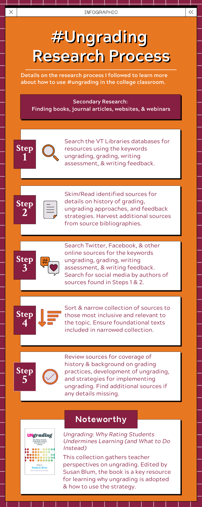

Glancing at the drafts submitted to the first Feedback Discussion, I see some confusion about the goal of the Research Description assignment. These tips should help.
- What is the focus of the Research Description assignment?
- The assignment should outline the research process you use for your recommendation report. The focus is on how you conduct the research, on the work flow that you follow as you search for secondary research. It is not about your topic. It’s about how you research your topic.
- That’s still confusing. Can you outline how it would work?
- Sure. Let’s say your topic is reducing hunger among Virginia Tech students who are dealing with financial difficulties. Your research description would outline the general steps you follow to find secondary sources on that topic. These might be the first few steps shown in your research description:
- Perhaps your first step could be online searches for local food banks and other relevant community resources.
- Next you could search for official assistance provided by the university.
- You could then search library databases for news stories and journal articles on how other universities address the challenge.
- How about an example Research Description?
- I made the example Research Description on the right, which shows the process I might follow to gather secondary research on Ungrading.
If I were a student in this course, I would try to improve the draft by working more on the visual elements. I would also make the description more specific. Right now it includes a general research process that almost anyone could follow. I would expand the description and refer to specific sources that I found.
- What is the Research Description supposed to look like?
- It should be a visual representation of your research process. There are examples of technical descriptions in the text book that can help. Generally speaking, it can look like an infographic, a flowchart, a process diagram, or an illustration. It can include words, but there should be an emphasis on visual elements.
- How does this connect to the Recommendation Report?
- The second section of the body of your Recommendation Report is the Methods section. In that section, you “Provide enough information to enable readers to understand what you did [when you conducted research] and why you did it that way. If others will be using the report to duplicate your methods, include sufficient detail” (Markel & Selber, 493).
Mapping out the process you follow as you conduct secondary research gives you a jumpstart on your Methods Section. You can copy the details from your research description and paste them into the first draft of your Methods Section. If it seems appropriate, you might even include the research description itself in the section.
- Okay, so what do I do if my first version of the Research Description had the wrong focus?
- Just try again. There are no repercussions for making mistakes in this course. Since your description contributes to the Methods Section of your Recommendation Report, it is worth the time to revise and improve.